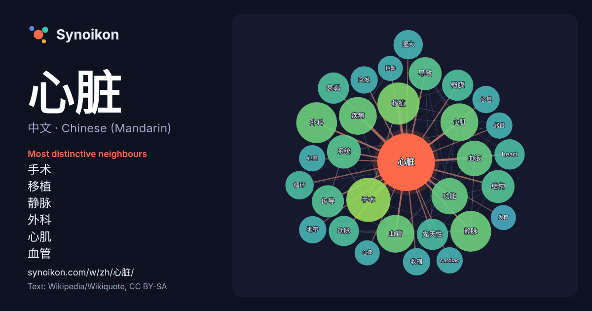

中文 · Chinese (Mandarin) · popular word
心脏
“heart” · The words found around it in 731 instances from Chinese (Mandarin) Wikipedia, Wikiquote.

Most distinctive neighbours
- 手术 33×
- 移植 30×
- 静脉 29×
- 外科 29×
- 心肌 26×
- 血管 24×
- 疾病 21×
- 血液 21×
- 传导 19×
- 瓣膜 18×
- 先天性 18×
- 衰竭 17×
- heart 17×
- 动脉 17×
- 肥大 16×
- 功能 15×
- 循环 14×
- 心包 14×
- 收缩 14×
- 突发 14×
× = how many times more often than in general Chinese (Mandarin) Wikipedia text.
Most frequent neighbours
- 手术 34
- 移植 31
- 外科 29
- 静脉 29
- 心肌 25
- 疾病 25
- 血管 25
- 功能 23
- 美国 22
- 血液 22
- 中心 21
- 系统 20
- 可能 19
- 导致 19
- 结构 19
- 传导 18
- 先天性 17
- 瓣膜 17
- 衰竭 17
- heart 16
In context
- 心臟（英語：heart），簡稱心，是動物循環系統中推動血管内血液的肌造器官。脊椎动物的心脏位于体腔前部、消化管腹侧、围心腔中，為由特殊结构与功能的肌肉、纤维组织构成的中空肌性器官；人體心臟則位於胸部縱膈腔的中間偏左手側。 人類、其他哺乳類、鸟類的心臟可分為四個腔室：左右心房（上半部）、左右心室（下 Wikipedia snippets · 心臟
- 心臟衰竭（英語：heart failure，簡記為HF）又称心力衰竭，简称心衰，是由于任何原因的初始心肌损伤（心肌梗死、血液动力负荷过重、炎症等）引起心肌结构和功能变化，导致心脏舒缩功能障碍，以心脏泵出的血液不能满足组织需求为特征的临床综合征。主要表现为呼吸困难、喘息、水肿等。 Wikipedia snippets · 心臟衰竭
- 心脏骤停（英語：sudden cardiac arrest、cardiac arrest）又称心搏骤停，是由各种原因导致的心脏突然不收缩或无效收缩，以致体循环衰竭、大动脉搏动消失、意识丧失、呼吸快而表浅并迅即转为停止，心电图表现为室颤或停搏的状态。 另一近似术语心电静止（asystole）或称心脏 Wikipedia snippets · 心臟驟停
- 心脏出血漏洞（英語：Heartbleed bug），简称为心血漏洞，又称心脏滴血，是一个在加密程序库OpenSSL中被发现的安全漏洞，该程序库广泛用于实现互联网的传输层安全（TLS）协议。该漏洞于2012年伴随着对TLS扩展心跳协议的支持更新被引入OpenSSL，2014年4月首次向公众披露。使用存 Wikipedia snippets · 心脏出血漏洞
- 心脏移植（heart transplant，cardiac transplant）是将同种异体心脏完整移植入受者，取代受者完全衰竭的心脏，恢复受者循环功能的复杂手术。主要适用于终末期心脏病的治疗，并需体外循环、移植物处置、免疫抑制剂治疗等综合技术的配合。 心脏移植属于一种内脏器官移植的心臟 Wikipedia snippets · 心脏移植
- 心臟除顫（cardiac defibrillation）简称除颤（defibrillation）、去颤，是利用医疗器械、特定药品、手术方式终止心脏颤动（英语：Fibrillation）的治疗方法。最常见的除颤是用电击终止心房或心室纤颤（英语：Fibrillation），称为电除颤（electric Wikipedia snippets · 心臟除顫
- 心脏肥大（英語：Cardiomegaly），有时稱大心脏或簡稱心肥大，是一种心脏扩大的疾病。它通常是因為某些因素而使心脏更加用力跳動而造成的的结果，例如肥胖、心脏瓣膜疾病、高血压和冠状动脉疾病。心肌病也与心脏肥大有关。 心脏肥大可能很严重，具体取决于心脏扩大的部位，并可能导致充血性心力衰竭。最近的 Wikipedia snippets · 心脏肥大
- 心臟舒張又稱舒张期（英語：Diastole，/daɪˈæstəli/，dy-AST-ə-lee）是心动周期中的一個阶段，此時心腔（心室）内压降低，静脉血液會回流入心脏。如果心室内压越低，静脉血液流回心室的速度也就越快。與心臟舒張相對的是心臟收縮。 体育院、系教材编审委员会《运动生理学》编写组编,体育系通用教材 Wikipedia snippets · 心臟舒張
More Chinese (Mandarin) words
Precomputed on 2026-10-09 with default settings (±5 words, medium corpus). The interactive map can refresh it with live data.